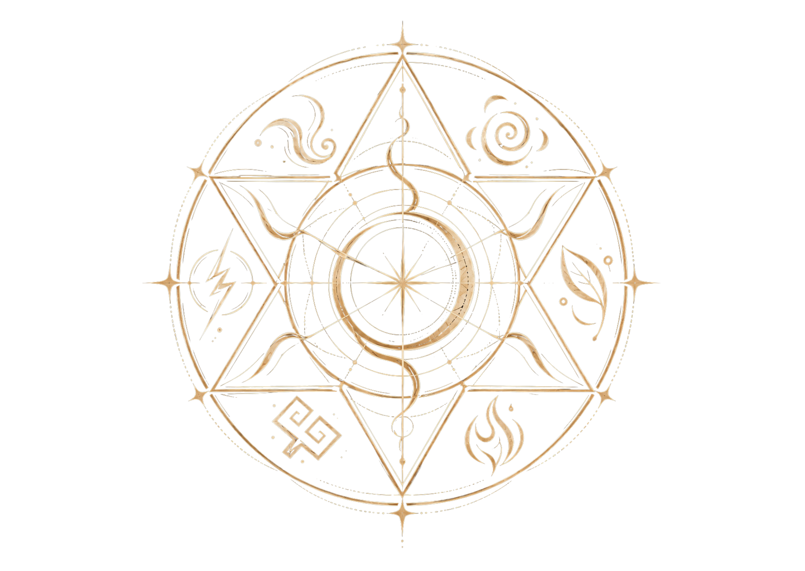
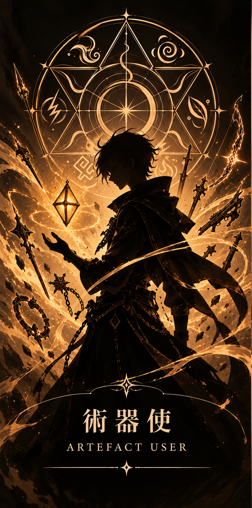
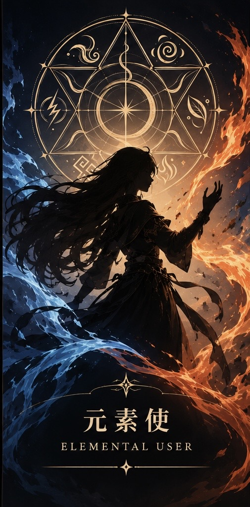
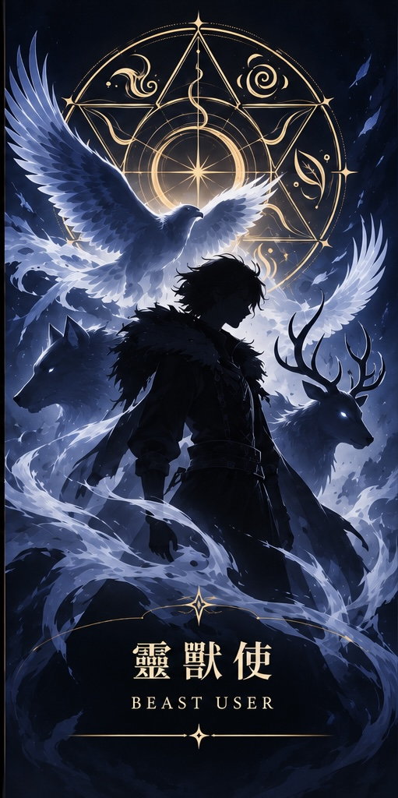

在《納尼亞傳奇：魔法師的外甥》中，曾描繪過一片奇妙的世界之間的森林。那裡有許多水池，而每一座水池，都通往一個不同的世界。
那麼，你是否曾經想過——
在無數個可能存在的世界之中，也許有一個世界，與我們所熟悉的現實如此相近，卻又截然不同。
那就是《聖術師》的世界。
在這裡，光明不再只是抽象的信念，而是能夠被看見、被感受，甚至被人們運用的力量。
然而，黑暗也不再只是隱藏在人心深處的陰影，而是更加真實、更加邪惡的存在。
而最特別的是——
在這個世界裡，我們所熟悉的那位神，有著不同的形象，也有著另一個名字。
祂以不同的方式向世人顯現，讓光明成為人們能夠親眼見證的力量。
然而，無論身處哪一個世界，無論人們如何稱呼祂，有一件事始終不曾改變——
祂依然是那位愛著人類的神。
而祂的愛，始終如一，直到永恆。
歡迎來到——《聖術師》宇宙。
THE SANCTARIST UNIVERSE
在世界誕生之初，神創造了天地萬物，並以六種神聖元素建立世界的秩序。
雷、水、土、風、火、木。
六種元素交織成生命與自然的樣貌，也成為日後聖術力量的根源。
然而，隨著人類文明發展，黑暗也逐漸侵入世界。
撒旦的誘惑、惡魔的侵擾，以及人心深處不斷滋長的罪惡，使原本美好的世界陷入衝突。
為了守護人類，神揀選了六位願意信靠祂的人，分別賜予他們駕馭神聖元素的能力。
這份力量，被稱為「聖術」。
而這六位最初的守護者的後代子嗣也各自繼承了駕馭神聖元素的能力。
這些人被稱為『聖術師』。
六大神聖元素與聖術陣
THE SIX SACRED ELEMENTS
✨ 游標移至下方聖術陣以喚醒元素神力，點擊觀看各元素聖術師詳細資訊 ✨

六大元素的血脈傳承
在《聖術師》的世界裡，六大元素並非能夠自由選擇或學習的力量，而是透過血脈世代傳承的天賦。
每位聖術師都有其所屬的元素，無論經過多少修練，都無法掌握其他元素的力量。
即使父母分別來自不同的元素家族，子女也不會同時繼承兩種元素之力。 例如，當父親是雷之聖術師、母親是水之聖術師時，他們的孩子只可能繼承其中一方的元素之力，或是沒有繼承任何元素力量，成為普通人。
換句話說，元素之力不會因血脈結合而融合，每個人至多只能擁有一種元素之力。
然而，元素的界線不等於聖術功能的界線。
六大元素各有擅長的聖術領域，卻可能透過不同的元素之力，達成相似的效果。真正區分聖術師的，不只是他們能做到什麼，更在於他們運用的是哪一種力量。
除此之外，還存在著凌駕六大元素之上的「禁術」。這類聖術不受單一元素的限制，卻必須以特殊且沉重的代價換取力量。
六種元素，同一個源頭；不同的血脈，各自承載著獨一無二的力量。
聖術師拉比
RABBI · THE DIVINE AND THE HUMAN
在無數世界誕生以前，祂便已經存在，也是世界上的第一位聖術師。
祂是萬物的創造者，也是六大元素的源頭。
在《聖術師》的世界中，人們稱祂為——拉比（Rabbi）。
祂以雷、土、火、木、風、水六種神聖元素創造世界，賦予萬物生命與秩序。世間所有聖術的力量，最初都源自於祂。
然而，拉比與世人所想像的神明，有著截然不同的模樣。
祂擁有完全的神性，也曾以完全的人性行走在人間。
身為神，祂擁有創造萬物的權柄，不受六大元素的限制，因為祂本身就是一切元素力量的源頭。
身為人，祂親身經歷人類的喜怒哀樂，感受過飢餓、疲憊與悲傷，也深知友情的珍貴、憐憫的溫柔，以及失去所愛之人的痛苦。
祂並非高高在上地俯視人間的苦難，而是親自走入這個充滿裂痕的世界，與人們一同生活。
祂更以聖術師的身分行走世間，成為唯一一位能夠同時運用六大元素之力的聖術師。祂與當時的聖術師並肩作戰，對抗侵蝕世界的黑暗，也在一次次的同行與教導中，讓跟隨祂的聖術師們逐漸明白——
聖術真正的意義，不僅在於力量本身，更在於如何運用這份力量去愛與守護。
當黑暗逐漸侵蝕祂所創造的世界，拉比選擇以自己作為代價，施展了改變世界命運的偉大聖術——「贖罪祭」。
祂承擔原本落在人類身上的罪與死亡，並在第三日從死亡中復活。
這場贖罪祭不僅帶來救贖，也使「神之靈」降臨世間，讓聖術師得以透過自身對祂信仰，展現出前所未有的力量。
然而，拉比留給這個世界最重要的，並非只是升級後的聖術。
而是祂親自向世人證明的一件事——
真正偉大的力量，不在於能夠支配多少生命，而在於願意為所愛的生命付出多少。
六翼的傳承｜THE LEGACY OF THE SIX WINGS
在拉比完成祂在人間的使命、即將返回祂的國度之際，祂將自己的六片羽翼，分別賜予當時與祂最親近的六位聖術師。
這六位聖術師分別承襲六大元素的力量，並因這份特殊的禮物，成為最初的翼聖術師。
羽翼的傳承，使他們得以與拉比建立更加深刻的連結，並獲得超越一般聖術師的強大能力，肩負起帶領各自元素家族、守護世人的使命。
然而，這份恩賜並未隨著最初六位翼聖術師的生命而終結。
拉比曾留下應許：
在每一個時代，六大元素家族都將各自擁有一位承襲羽翼的聖術師。
從此，六翼的傳承跨越世代，在漫長的歷史中延續，成為拉比與聖術師之間永不斷絕的約定。
六片羽翼，六種元素，六位繼承者。
即使祂已返回自己的國度，祂的應許仍在世間延續。
聖術師的三大類型
THE THREE TYPES OF SANCTARISTS
在古老的年代，聖術師只能運用血脈所繼承的六大元素，以最原始的方式駕馭雷、土、火、木、風與水。
直到聖術師拉比使用了最偉大的聖術『贖罪祭』後，徹底改寫了聖術的歷史。
隨著拉比完成贖罪祭，「神之靈」降臨世間，讓聖術師與元素之間的關係迎來前所未有的轉變。
從此，元素不再只是被操控的自然力量，更能回應聖術師內心深處對拉比的信仰，以獨一無二的姿態顯現於世。
後世將這些嶄新的聖術形式歸納為三大類型：
術器使、元素使、靈獸使。
✨ 點擊下方卡牌，解鎖三大類型聖術師的深度設定與故事 ✨



術器使（ARTIFACT SANCTARIST ）
當一個人選擇將信任交託給拉比，那份看不見的信念，便有可能凝聚成真實的形體。
術器使能將自己對拉比的信任具現化，創造出專屬於自己的神奇術器。每一把術器都獨一無二，不僅擁有不同的外觀與特性，更能協助持有者將自身的元素聖術發揮得更加出色。
然而，術器並非單純為了戰鬥而存在。
它的誕生，往往源自聖術師生命中某個重要的時刻——或許是一場試煉、一次抉擇，又或是一段讓他決定信任拉比的經歷。
因此，術器的名字通常與那段故事息息相關，成為持有者與拉比之間獨一無二的見證。
信，是將看不見的信任，化為握得住的力量。
世界的裂痕
THE FRACTURES OF CREATION
在世界誕生之初，六大元素交織出萬物的秩序。
那是一個原本美好而完整的世界，直到某一天，一場來自黑暗的誘惑，使這份完美出現了第一道裂痕。
從那一刻起，一股原本不屬於這個世界的黑暗力量開始滋生。
墮落的天使利用這股力量，創造出無數被稱為「惡魔」的存在。
牠們沒有固定的形貌，也沒有憐憫。牠們以人類的恐懼為養分，透過傷害與誘惑，使世界產生更多裂痕。
而聖術師的使命，便是在世人未曾察覺的角落，與這些黑暗存在持續抗衡。
惡魔的起源｜THE ORIGIN OF DEMONS
惡魔並非單純來自某個黑暗國度的怪物。
牠們誕生於世界的不完美，是墮落天使利用黑暗力量所創造出的異常存在。
恐懼、絕望與人性的軟弱，都是牠們試圖利用的事物。牠們不斷侵擾人類，讓原本美好的世界逐漸失去光芒。
然而，惡魔的存在本身，卻違背了這個世界最初被創造時的秩序。
因此，世界始終存在著一道神祕的防線。
修正法則｜THE LAW OF CORRECTION
為什麼聖術師與惡魔已經交戰了數千年，人類歷史卻幾乎沒有留下任何關於惡魔的確切證據？
答案，隱藏在這個世界與生俱來的秩序之中。
聖術師將其稱為——「修正法則」。
惡魔是世界秩序中的異物。當聖術師成功消滅惡魔，世界便會啟動自我修復，將牠所造成的異常逐漸抹除。
被破壞的環境得以恢復，遭受惡魔攻擊的人類也能隨著法則重置，而一般人對惡魔的記憶與相關的超自然痕跡，則會一併消失。
唯有聖術師，仍然記得那些曾經發生的戰鬥。
這也是為什麼，在看似平凡的人類文明背後，一場延續千年的光暗之戰，始終不曾真正停止。
然而，修正法則並非無所不能。
它能修正惡魔造成的漏洞，卻無法修正人類自己做出的選擇。
當一個人出於自己的意志選擇傷害、背叛，甚至主動接受黑暗的誘惑，這些行為所造成的後果，便不再是世界能夠輕易抹除的異常。
而當擁有神聖元素之力的聖術師，選擇背離原本守護世界的使命，轉而投向黑暗時，他們便有了另一個稱呼——巫師（Sorcerers）。
對聖術師而言，最令人畏懼的，或許從來不只是惡魔本身。
而是那些明明擁有選擇的自由，卻決定讓黑暗進入自己生命的人。
世界能夠修復黑暗留下的裂痕，卻無法抹去人心親自做出的選擇。
烙印者｜THE MARKED
並非所有普通人，都會遺忘那些不該被記住的事。
在聖術師的世界中，存在著極少數沒有繼承任何元素、也無法使用聖術，卻不受修正法則記憶抹除影響的人類。
他們被稱為——「烙印者」。
烙印者多半出現在聖術師的配偶，以及未能繼承元素力量的後代之中。然而，也有少數特殊的例子，例如某些靈媒、先知，或其他與超自然世界有著特殊連結的人。
他們雖然沒有聖術師的力量，卻能記住那些在一般人記憶中消失的超自然事件。
然而，這份特殊的身分並非來自血脈的必然傳承，更不是能夠透過聖術、儀式或人為手段取得的能力。
誰能成為烙印者，唯有創造世界的神能夠決定。
在這個連記憶都可能被世界修正的時代，他們是少數能夠記住隱藏真相的普通人。
「沒有聖術的力量，卻被允許記住聖術的存在。」
讓故事，跨越文字的界線。
BEYOND THE PAGES, INTO NEW WORLDS.
我們相信，一個好的故事，不應只停留在文字之中。《聖術師 The Sanctarist》以六大元素為起點，交織出橫跨不同國度、世代與命運的奇幻宇宙。在這個世界裡，我們不只描繪超凡的力量與冒險，更希望透過每一段故事，探索信念、盼望、愛，以及人性之中的光明與掙扎。
而這個宇宙，仍有無限可能等待被看見。我們期待與同樣熱愛故事及藝術創作的夥伴攜手，讓《聖術師》以影視、動畫,漫畫、遊戲、音樂、舞台藝術，或其他富有創意的形式，延伸出更多動人的篇章。
無論您來自影視製作公司、藝術創作團隊，或是對本作品的改編、授權及跨界合作抱有興趣的創作者，我們都誠摯歡迎您的聯繫。讓我們一起，賦予這個宇宙更多被看見的可能。
合作洽詢｜白魔法藝術工作室
WHITE MAGIC ART STUDIO
點我聯絡